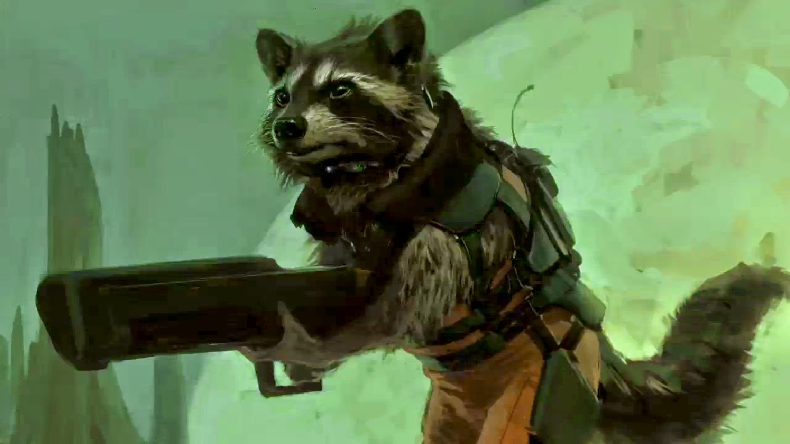

Rocket Racoon adalah karakter dalam komik Marvel. Tokoh ini diciptakan oleh Bill Mantlo dan Keith Giffen dan pertama kali muncul pada Marvel Preview di tahun 1976. Rocket sendiri merupakan sebuah robot berbentuk rakun yang juga merupakan anggota dari Guardians of the Galaxy.
Rocket sebenarnya adalah anggota dari penjaga "Keystone Quardrant" disebuah tempat yang bernama dinding Galacian. Ia berasal dari planet Halfworld, planet dimana para binatang bertingkah dan berpikir layaknya manusia melalui proses genetik. Saat masih di Halfworld, Rocket memiliki sahabat bernama Wal Russ, seekor walrus yang dapat berbicara. Rocket bersama Wal Russ merupakan orang yang melindungi planet mereka dari berbagai ancaman.
Rocket sendiri memiliki watak berbakat, berani, setia, dan pintar dalam menyusun strategi. Namun, robot rakun ini memiliki masalah pada pengendalian emosi sehingga selalu memudah marah. Penyakit Obsesif kompulsif yang ia alami memang mirip seperti Hulk dan ternyata dalam komiknya, Hulk pernah membantu Rocket saat menghentikan Judson Jakes yang mencoba mencuri kitab Halfworld di tanah kelahirannya.
Bicara mengenai keahlian, Rocket Racoon merupakan ahli mekanik yang handal. Ia dapat membuat benda yang ia inginkan dengan mengumpulkan benda disekitarnya. Rocket juga pilot pesawat yang handal dan ahli persenjataan meskipun senjata tersebut dua kali lebih besar dari tubuhnya. Ia juga memiliki peciuman, penglihatan, dan pendengaran yang sangat akurat.
Setelah bertemu dengan Star Lord, Rocket bergabung dengan kelompok Guardians of the Galaxy dan mencoba melindungi galaxy dari berbagai ancaman.